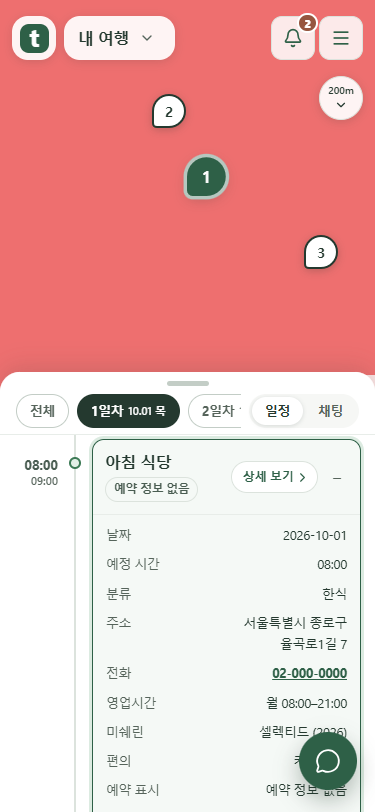
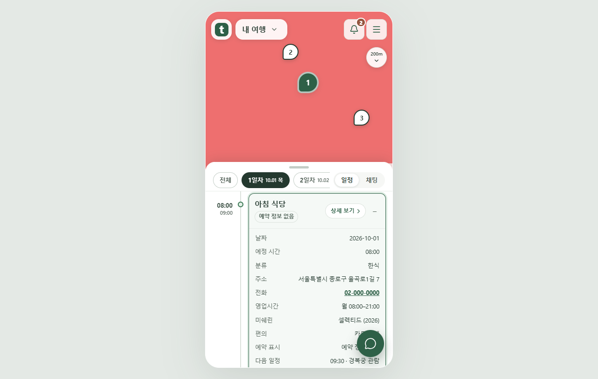

<!doctype html>
<html lang="ko"><meta charset="utf-8"><meta name="viewport" content="width=device-width,initial-scale=1"><title>여행 마커 안내 토스트 제거</title>
<style>body{margin:0;background:#edf2ef;color:#243d33;font:16px/1.7 system-ui,sans-serif}main{max-width:1080px;margin:auto;padding:24px}h1{font-size:24px}section{margin:24px 0;padding:24px;background:white;border-radius:20px}img{display:block;max-width:100%;height:auto;margin:auto;border:1px solid #d5dfd9;border-radius:16px}a{color:inherit}small{color:#54695f}</style>
<main><h1>마커를 눌러도 안내 토스트를 띄우지 않습니다</h1><p>선택한 일정은 지도에서 강조하고 목록에서 펼칩니다. 실제 변경·선택 요청 알림은 유지합니다.</p><small>설치된 Chrome으로 촬영한 mock 서버 화면입니다. 붉은 지도 배경은 시험용 타일이며 실제 지도 화면이 아닙니다.</small>
<section><h2>375px 휴대폰</h2><a href="selected-375.png"></a></section>
<section><h2>1280px PC</h2><a href="selected-1280.png"></a></section></main></html>
